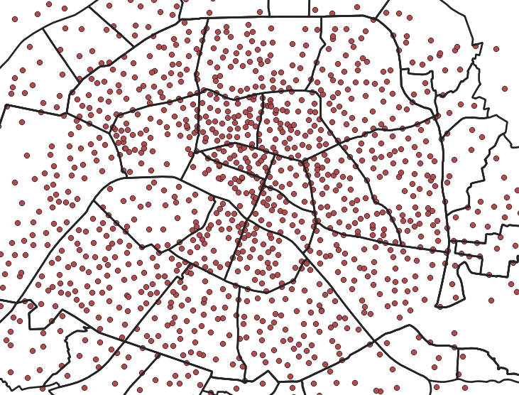
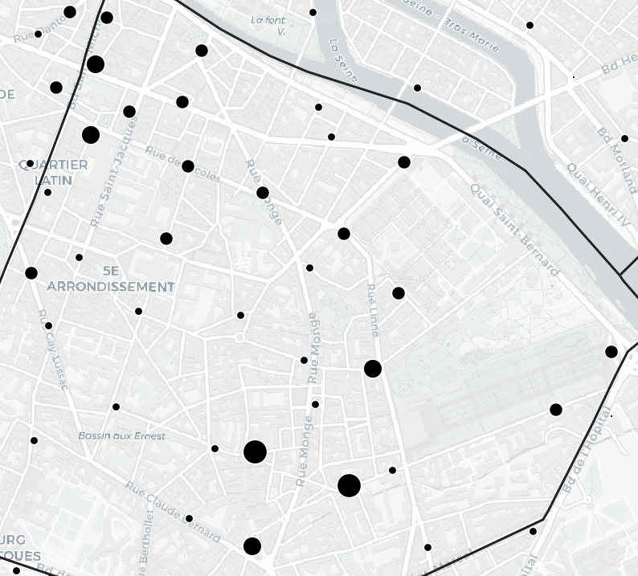
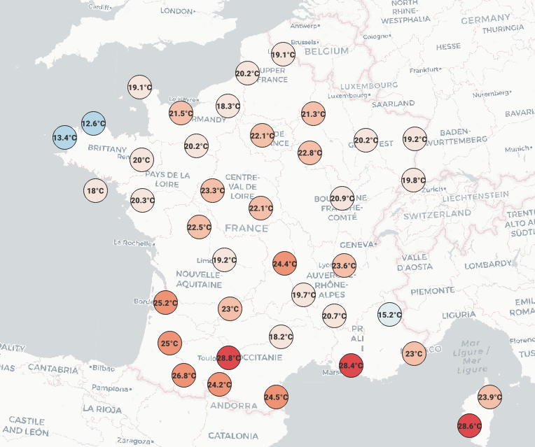
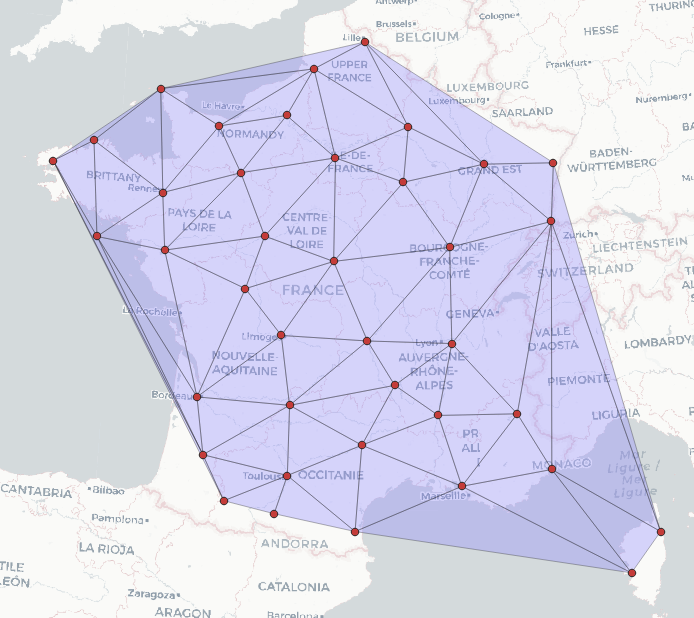
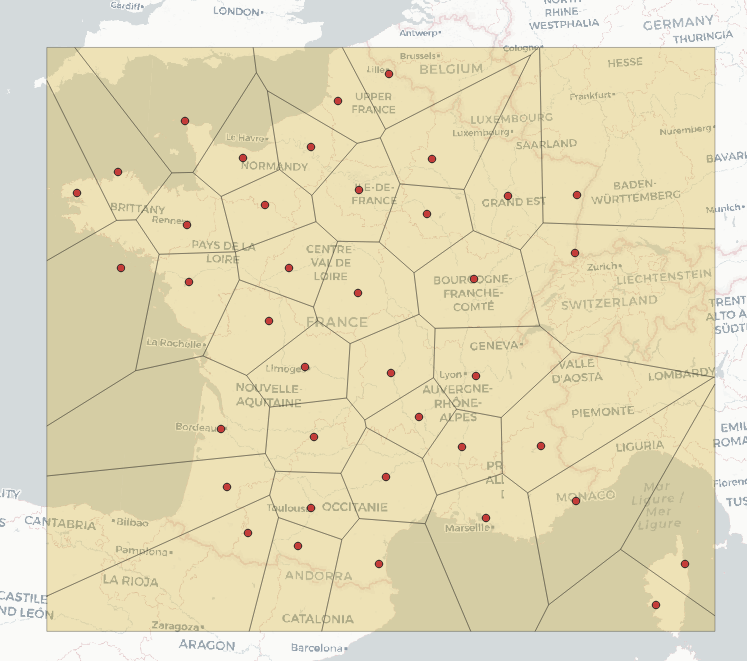
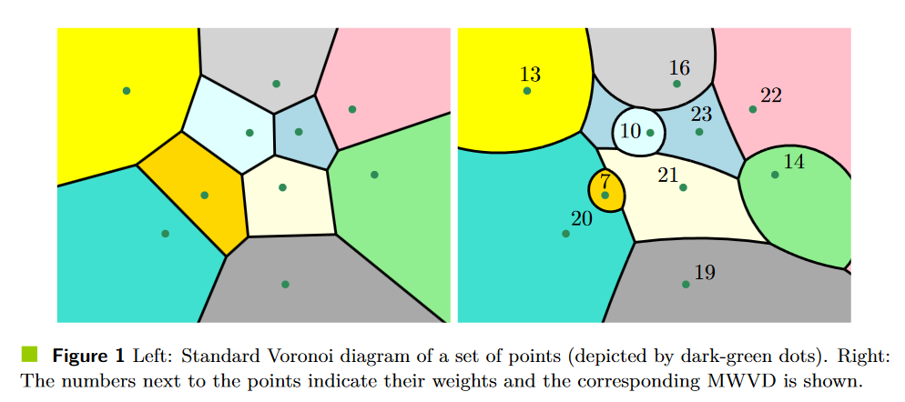

M2 Carthagéo - Du discret au continu - Séance 1
Séance 1 - Des points aux polygones
Pourquoi ne pas se contenter de points ?
- Les points (nombreux) constituent de mauvais indicateurs visuels de la distribution spatiale.
⇰ Ce semis est-il concentré ou dispersé ?

- Les points sont de mauvais indicateurs du contexte spatial.
⇰ Depuis l’I.G., en période de grève, où ais-je le plus de chance de trouver un Vélib ?

- Données par définition discrètes, qui n’ont pas de validité en dehors de leur propre localisation.
⇰ Quelle température faisait-il à la Rochelle ce dimanche midi ?

Et pourtant, les sources de données ponctuelles sont les plus fréquentes
- Données issues de géolocalisation (Adresses, “Lieux”, …)
- Données de relevés (Indicidents, recensements, …)
- Données de capteurs (Statiques ou dynamiques)
- Données de suivi individuelles (GPS, GéoIP, …)
On a souvent besoin de passer d’une donnée ponctuelle à une donnée continue ou a minima zonale, donc de réaliser une interpolation
L’interpolation
Définition
« L’interpolation spatiale est le processus d’utilisation de points dont les valeurs sont connues pour estimer des valeurs à d’autres points inconnus.
Par exemple, pour faire une carte des précipitations (pluie) de votre pays, vous ne trouverez pas assez de stations météo réparties uniformément pour couvrir l’intégralité de la région. L’interpolation spatiale peut estimer la température à des endroits sans données enregistrées en utilisant des relevés de températures connus dans des stations météo à proximité. »

Avant l’interpolation
Des points aux mailles
Il y a différentes possibilités pour mailler un territoire, c’est-à-dire le découper en un ensemble de zones contigües
Mailles uniformes
- Carroyages
- Hexagones
- Triangles isocèles / losanges
Mailles hétérogènes
- Maillages administratifs
- Triangulations et tesselations
Triangulation de Delaunay

Diagramme de Voronoï / Polygones de Thiessen


Held, M., & de Lorenzo, S. (2020). On Implementing Multiplicatively Weighted Voronoi Diagrams. In Proc. 36th EuroCG.
Exercice collectif
- Dans le tableur indiqué dans l’EPI, répartissez-vous les mailles.
- Pour chaque type de maille, comptez le nombre de bars contenues dans chaque maille.
- Reportez dans le tableur le nombre de mailles, le nombre moyen de bars par maille, la médiane, l’écart-type et le coefficient de variation de ces valeurs.
- Collectivement, analysez les effets de chacun des paramètres (forme, taille et décalage).
Exercice collectif
- Dans le tableur indiqué dans l’EPI, répartissez-vous les mailles.
- Pour chaque type de maille, comptez le nombre de bars contenues dans chaque maille.
- Reportez dans le tableur le nombre de mailles, le nombre moyen de bars par maille, la médiane, l’écart-type et le coefficient de variation de ces valeurs.
- Collectivement, analysez les effets de chacun des paramètres (forme, taille et décalage).
En restant dans un environnement SIG (QGIS), comment exécuter cette “analyse de sensibilité” plus rapidement ?